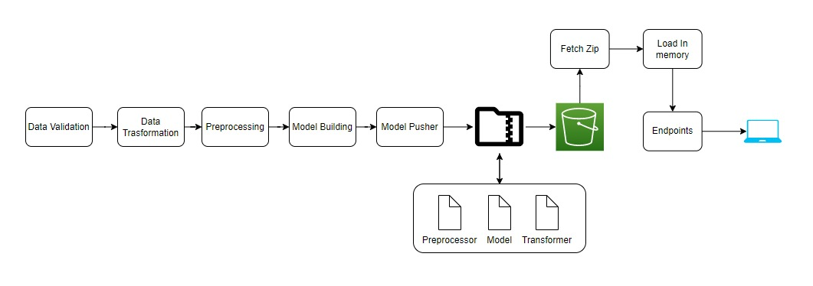

Sensor Fault Detection
Problem Statement
The Air Pressure System (APS) is a critical component of a heavy-duty vehicle that uses compressed air to force a piston to provide pressure to the brake pads, slowing the vehicle down. The benefits of using an APS instead of a hydraulic system are the easy availability and long-term sustainability of natural air.
Solution Proposed
In this project, the system in focus is the Air Pressure system (APS) which generates pressurized air that are utilized in various functions in a truck, such as braking and gear changes. The datasets positive class corresponds to component failures for a specific component of the APS system. The negative class corresponds to trucks with failures for components not related to the APS system.
Tech Stack Used
- Python
- FastAPI
- Machine learning algorithms
- Docker
- MongoDB
Infrastructure Required
- AWS S3
- AWS EC2
- AWS ECR
- Git Actions
- Terraform
Data Collections

Project Architecture
Deployment Architecture